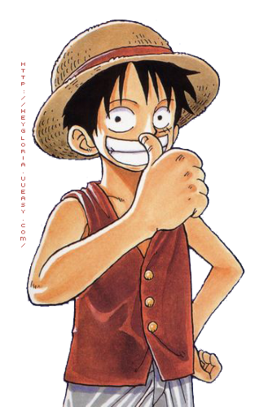

Tout d'abord ,il est important de savoir qui est luffy
Luffy, le capitaine au chapeau de paille dans la série animée et manga "One Piece", a exercé une influence profonde sur le monde qui l'entoure. Par son courage, sa détermination et sa volonté inébranlable, il a inspiré de nombreuses personnes à poursuivre leurs rêves, à défendre leurs convictions et à se battre pour la liberté. Son charisme et sa personnalité ont rassemblé des alliés de tous horizons, créant un véritable mouvement de changement et d'espoir.
si tu veux plus de détails,Click pour savoir C'est qui ce luffy?
Traits de personnalité uniques
Le trait de caractère qui me plît le plus chez luffy est sans doute son humour démesuré. De plus il se distingue par sa détermination inébranlable et sa volonté sans faille. Rien ne peut le décourager dans sa quête. Son optimisme contagieux et son esprit d'équipe font de lui un leader inspirant. Il est capable de rallier les autres à sa cause et de les motiver à poursuivre leurs rêves. Ainsi, on peut même dire qu'il transcende la dimension du simple personnage fictif pour alors atteindre les lecteurs en eux-même. Il est admiré par des millions de fans à travers le monde et est devenu un symbole d'espoir(oui, carrément mdrr) ,de persévérance et de résilience. Sa popularité a créé une communauté mondiale de fans dévoués, prêts à suivre ses aventures avec passion.
Valeurs et idéaux portés par Luffy
Luffy, le capitaine au chapeau de paille, incarne des valeurs et des idéaux qui font de lui un personnage exceptionnel dans l'univers des mangas. Sa quête de liberté, sa défense de la justice, sa loyauté envers ses amis, son courage inébranlable et sa compassion envers les autres font de lui le meilleur personnage de mangas au monde. Luffy rejette les règles et les normes de la société pour vivre selon ses propres termes, tout en luttant contre l'injustice et en protégeant les faibles. Son esprit d'équipe et sa volonté de tout donner pour ses amis sont des exemples inspirants de camaraderie et de loyauté. Sa détermination à surmonter tous les obstacles et à atteindre ses objectifs est une source de motivation pour tous ceux qui le suivent. Luffy incarne l'idéal d'un héros qui se bat pour un monde meilleur, où la liberté, la justice et l'amitié sont des valeurs primordiales.
Évolution et croissance du personnage
L'évolution et la croissance du personnage de Luffy dans l'univers de One Piece sont tout simplement remarquables. Au fil de son aventure, Luffy passe de jeune pirate insouciant à un capitaine de plus en plus fort, sage et respecté. Son parcours est marqué par des défis et des épreuves qui lui permettent de grandir et de développer ses compétences. Au départ, Luffy est un rêveur intrépide qui aspire à devenir le roi des pirates. Son innocence et sa naïveté le rendent attachant, mais il doit rapidement faire face à la réalité impitoyable du monde pirate. Au fur et à mesure de ses rencontres avec des ennemis redoutables et des alliés précieux, Luffy acquiert de l'expérience et apprend de ses erreurs. Sa détermination sans faille lui permet de surmonter les obstacles les plus difficiles et de devenir de plus en plus fort. L'une des grandes forces de Luffy est sa capacité à s'adapter et à évoluer. Il développe de nouvelles techniques de combat, améliore ses compétences de leadership et apprend à utiliser son fruit du démon de manière plus stratégique. Mais son évolution ne se limite pas seulement à la puissance physique. Luffy grandit également sur le plan émotionnel. Il apprend à comprendre les autres, à se soucier de leurs problèmes et à prendre des décisions difficiles pour le bien de son équipage. La croissance de Luffy est également marquée par son influence sur ceux qui l'entourent. Ses actions héroïques et son esprit de camaraderie inspirent ses compagnons et les poussent à se dépasser. Il est un symbole d'espoir et de persévérance pour tous ceux qui croisent son chemin. En fin de compte, l'évolution et la croissance de Luffy en font un personnage exceptionnel. Son voyage est bien plus qu'une quête personnelle, c'est une leçon sur la force de la détermination, de l'amitié et du courage. Luffy représente l'idée que nous avons tous le potentiel de grandir, de nous améliorer et de devenir la meilleure version de nous-mêmes.

Chapeau de Paille influence les auteurs de manga
Luffy, le personnage emblématique de One Piece, est une véritable source d'inspiration pour de nombreux auteurs de manga à travers le monde. Son influence se fait ressentir dans diverses œuvres où d'autres personnages ont été directement inspirés par ses traits de caractère uniques et son parcours remarquable. Par exemple, Naruto Uzumaki, le héros du manga Naruto, partage de nombreuses similitudes avec Luffy. Les deux protagonistes sont des jeunes garçons intrépides qui aspirent à devenir les meilleurs dans leur domaine respectif. Ils sont dotés d'une détermination inébranlable, d'un optimisme contagieux et d'une loyauté inconditionnelle envers leurs amis. Un autre exemple est Monkey D. Garp, le grand-père de Luffy dans One Piece. Ce personnage est également apparu dans d'autres œuvres, comme Dragon Ball Super, où il inspire le personnage de Son Goku. Garp et Goku partagent une passion commune pour l'entraînement intensif, une force surhumaine et un amour pour la bataille. Ils sont tous deux des symboles de bravoure et de puissance, incarnant l'esprit du guerrier. Luffy a également influencé des mangas d'aventure tels que Fairy Tail, où le personnage principal, Natsu Dragneel, partage avec lui une passion pour l'aventure, une attitude imprévisible et une volonté indomptable de protéger ses amis. De même, le personnage de Gon Freecss dans Hunter x Hunter trouve son inspiration dans la détermination et le sens de l'aventure de Luffy. Ces exemples illustrent comment Luffy a transcendé son propre univers pour devenir une véritable source d'inspiration pour d'autres auteurs. Son charisme, sa personnalité attachante et son impact émotionnel sur les lecteurs ont ouvert la voie à de nouveaux personnages qui cherchent à capturer l'énergie et l'essence même de Luffy.
Conclusion
En conclusion, Luffy est bien plus qu'un simple personnage de manga. Son influence s'étend à travers différentes œuvres où il inspire des héros audacieux, des aventuriers intrépides et des combattants passionnés. Sa présence dans le monde du manga reste indéniable, faisant de lui un véritable symbole d'inspiration pour de nombreux auteurs et lecteurs à travers le monde.